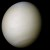
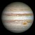
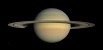

欢迎
欢迎访问观鸟网虚拟站点。如果这是一个真实的网站，那么它就是观鸟爱好者的理想聚集地。无论你是一名期望学习观鸟知识的新手，还是一位希望分享体会、经验和图片的观鸟老手。
时不我待！赶快带齐装备，关上电脑，去拥抱美丽的大自然吧！

欢迎访问观鸟网虚拟站点。如果这是一个真实的网站，那么它就是观鸟爱好者的理想聚集地。无论你是一名期望学习观鸟知识的新手，还是一位希望分享体会、经验和图片的观鸟老手。
时不我待！赶快带齐装备，关上电脑，去拥抱美丽的大自然吧！
| 名字 | 图片 | 质量 (1024kg) | 直径 (km) | 密度 (kg/m3) | 重力 (m/s2) | 天长 (小时) | 与太阳距离 (106km) | 平均温度 (°C) | 卫星数量 | 备注 | ||
|---|---|---|---|---|---|---|---|---|---|---|---|---|
| 类地行星 | 水星 |  |
0.330 | 4,879 | 5427 | 3.7 | 4222.6 | 57.9 | 167 | 0 | 距太阳最近 | |
| 金星 |  | 4.87 | 12,104 | 5243 | 8.9 | 2802.0 | 108.2 | 464 | 0 | |||
| 地球 |  |
5.97 | 12,756 | 5514 | 9.8 | 24.0 | 149.6 | 15 | 1 | 我们的世界 | ||
| 火星 |  |
0.642 | 6,792 | 3933 | 3.7 | 24.7 | 227.9 | -65 | 2 | 红色星球 | ||
| 类木行星 | 气巨星 | 木星 |  | 1898 | 142,984 | 1326 | 23.1 | 9.9 | 778.6 | -110 | 67 | 太阳系最大 |
| 土星 |  | 568 | 120,536 | 687 | 9.0 | 10.7 | 1433.5 | -140 | 62 | |||
| 冰巨星 | 天王星 |  |
86.8 | 51,118 | 1271 | 8.7 | 17.2 | 2872.5 | -195 | 27 | ||
| 海王星 |  |
102 | 49,528 | 1638 | 11.0 | 16.1 | 4495.1 | -200 | 14 | |||
| 矮行星 | 冥王星 |  |
0.0146 | 2,370 | 2095 | 0.7 | 153.3 | 5906.4 | -225 | 5 | 2006年降格，但尚存争议。 | |